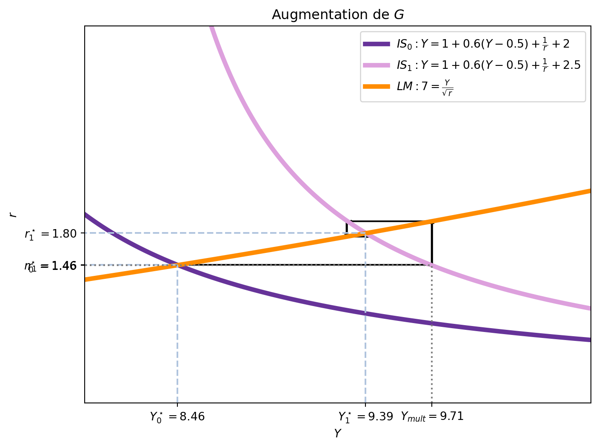
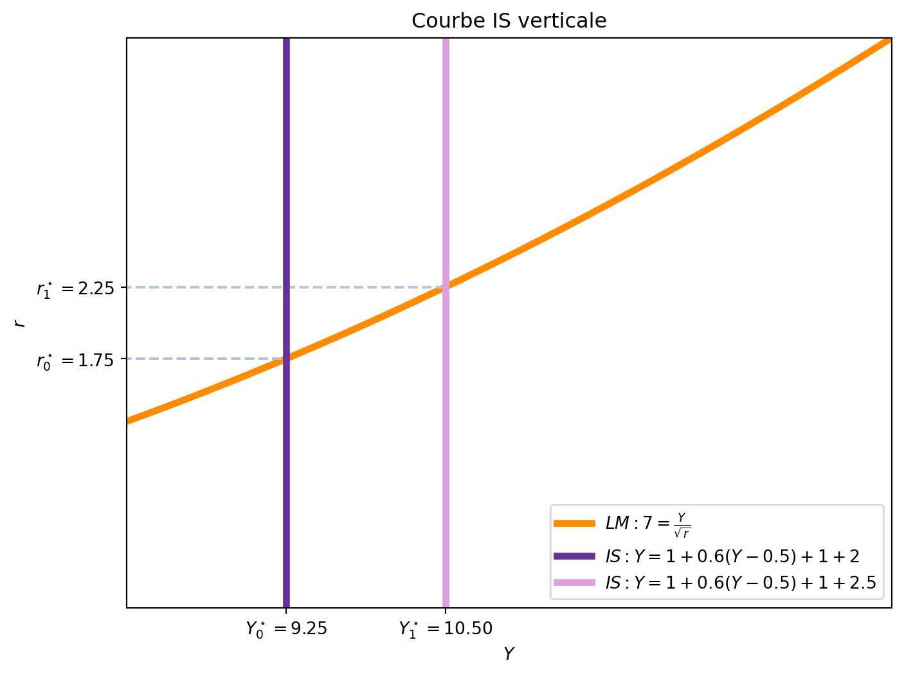
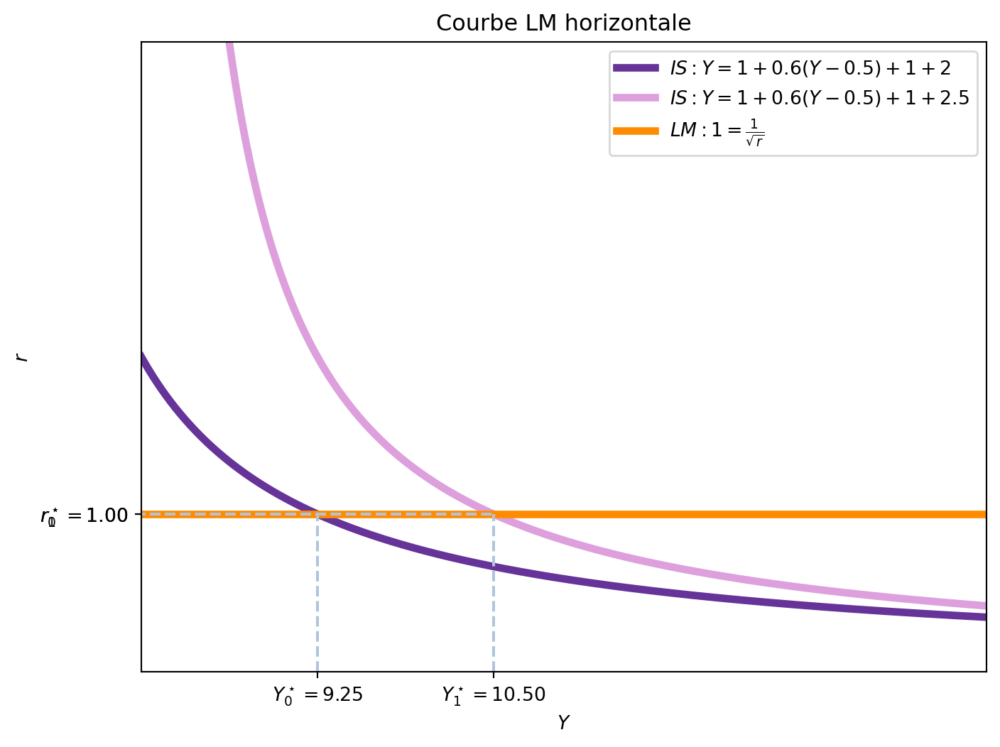
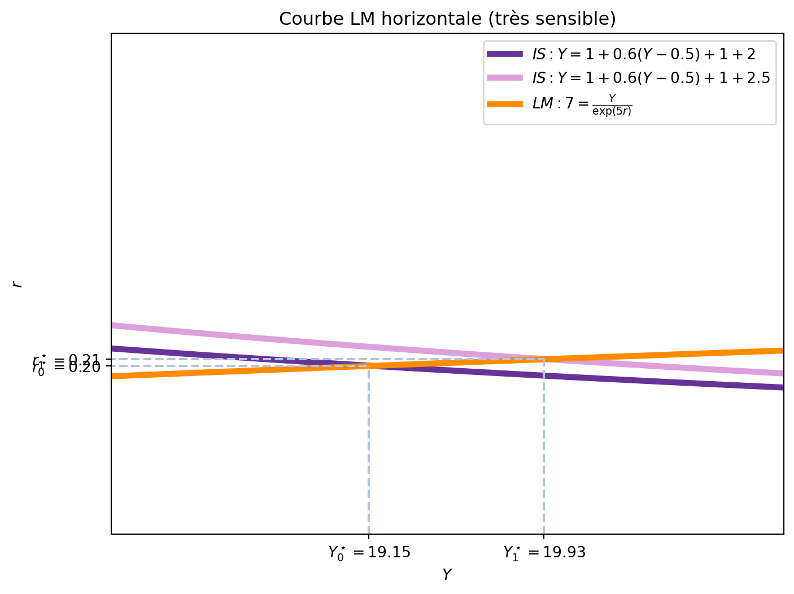
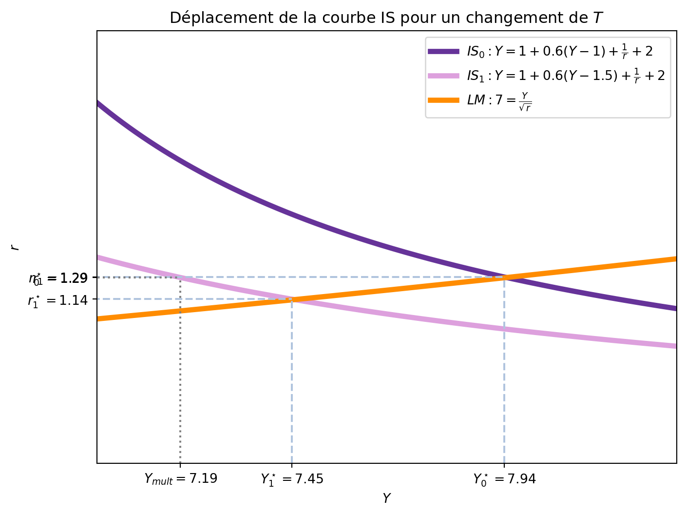
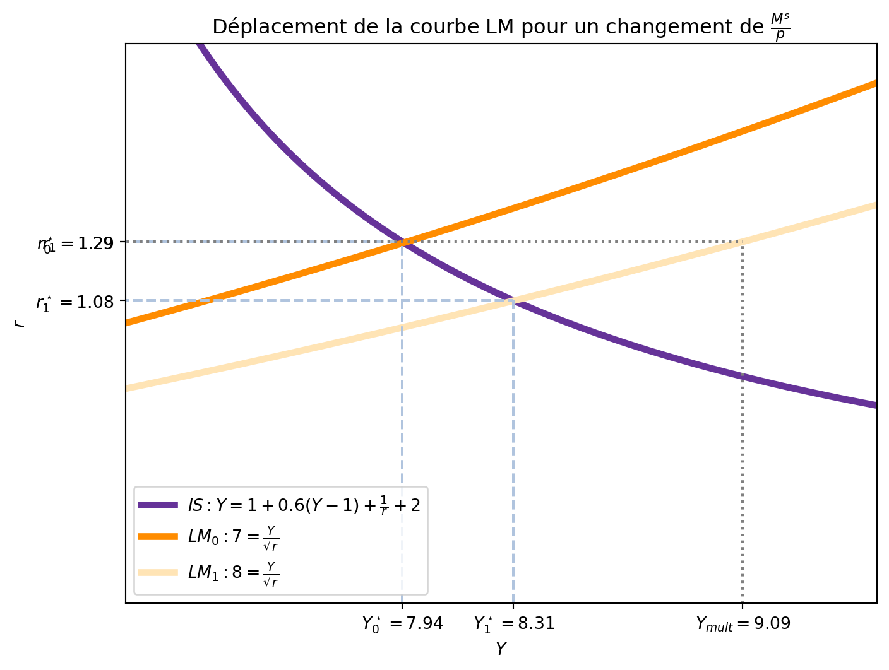
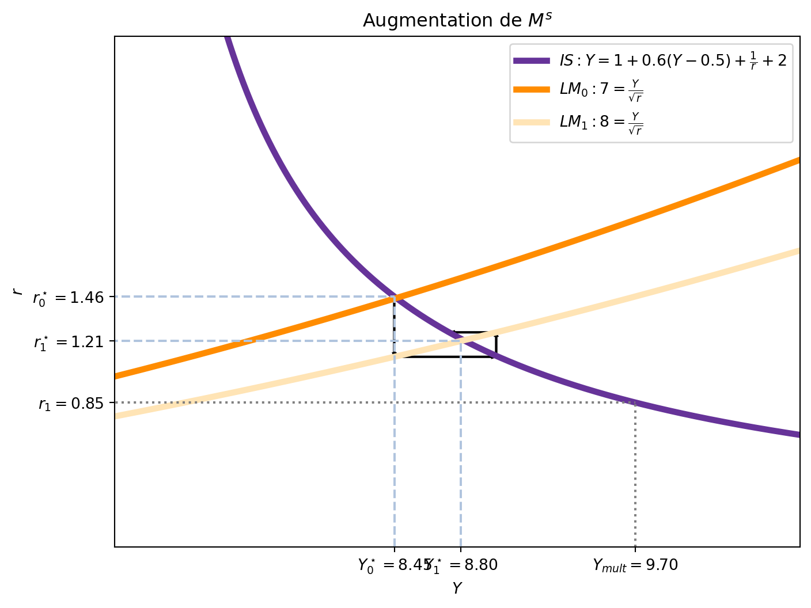
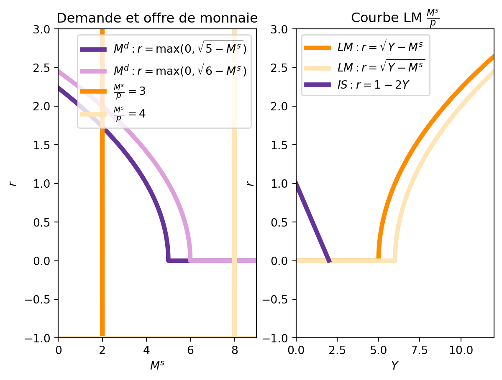
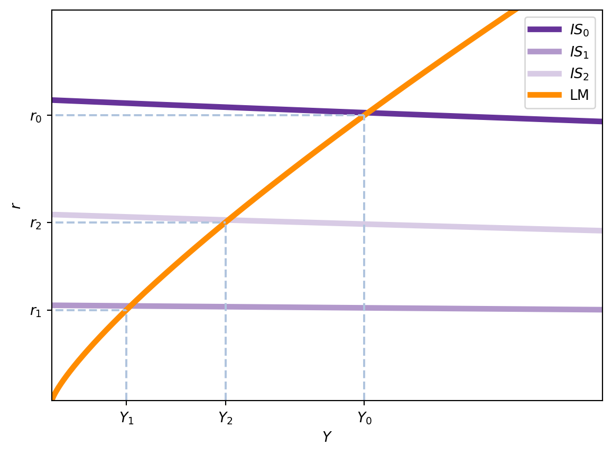

5 Politique budgétaire et monétaire dans le modèle IS-LM
Le modèle IS-LM est fondé sur l’idée que le revenu et le taux d’intérêt sont déterminés par l’interaction entre le marché des biens (représenté par la courbe IS) et le marché de la monnaie (représenté par la courbe LM). Dans cette section, nous allons examiner comment les politiques budgétaires et monétaires peuvent influencer l’équilibre de l’économie en déplaçant ces courbes. Normalement, les modifications de ces politiques répondent à des chocs économiques, qui peuvent aussi être représentés par des déplacements des courbes IS et LM.
L’analyse commencera par la politique budgétaire, qui est l’ensemble des mesures prises par le gouvernement pour influencer l’économie en modifiant les dépenses publiques et les impôts. Ensuite, nous examinerons la politique monétaire, qui est l’ensemble des mesures prises par la banque centrale pour influencer l’économie en modifiant la masse monétaire et les taux d’intérêt.
5.1 Politique budgétaire
La politique budgétaire est l’ensemble des mesures prises par le gouvernement pour influencer l’économie en modifiant les dépenses publiques (\(G\)) et les impôts (\(T\)). Comme nous l’avons vu dans la première partie, quand le gouvernement augmente les dépenses publiques, cela déplace la courbe IS vers la droite, augmentant ainsi le revenu national et réduisant le chômage. De même, une augmentation des impôts réduit le revenu national et déplace la courbe IS vers la gauche.
5.1.1 Changement de \(G\)
Imaginons que le gouvernement décide d’augmenter ses dépenses publiques de \(\Delta G\). Nous pouvons représenter cette situation dans le modèle IS-LM: la courbe IS se déplace vers la droite de \(\frac{1}{1-c_1}\Delta G\) (le multiplicateur simple des dépenses publiques), où \(c_1\) est la propension marginale à consommer.
Dans la Figure 5.1, nous avons tracé la courbe IS initiale \(IS_0\) et la courbe IS après l’augmentation de \(G\), \(IS_1\). La valeur du multiplicateur est donnée par \(\frac{1}{1-c_1}\), où \(c_1\) est la propension marginale à consommer et, avec les paramètres choisis, \(c_1 = 0.6\), le multiplicateur est \(\frac{1}{1-0.6} = 2.5\). Ainsi, quand \(G\) augmente de 2 à 2.5 (une augmentation de \(\Delta G = 0.5\)), la courbe IS se déplace vers la droite de \(2.5 \times 0.5 = 1.25\). On voit le déplacement de la courbe IS de \(IS_0\) à \(IS_{mult}\), avec les valeurs \(8.46\) et \(9.71\), soit une augmentation de \(1.25\).
Cependant, l’augmentation de \(G\) n’entraîne pas une augmentation du revenu de \(1.25\). Si nous la calculons, nous avons:
\[ \Delta Y = Y_1^\star - Y_0^\star = 9.39 - 8.46 = 0.93 \]
Ceci reviendrait à un multiplicateur de \(\frac{\Delta Y}{\Delta G} = \frac{0.93}{0.5} = 1.86\). Pourquoi le multiplicateur est-il plus petit que celui calculé précédemment?
La réponse se trouve dans l’augmentation du taux d’intérêt: l’effet d’éviction. Une manière (simplifiée mais incorrecte) de comprendre ce phénomène est de considérer que l’augmentation des dépenses publiques augmente le revenu de \(Y_0^\star\) à \(Y_1^\star\). Mais la courbe IS ne suffit pas toute seule à expliquer l’équilibre. Avec l’augmentation hypothétique de \(Y\), la demande d’encaisses réels augmente, ce qui provoque un déséquilibre sur le marché de la monnaie. Pour rétablir l’équilibre, le taux d’intérêt doit augmenter, ce qui réduit l’investissement et, par conséquent, le revenu. Or, l’augmentation du taux d’intérêt diminue l’investissement et, donc, le revenu. Ceci provoque à nouveau un déséquilibre sur le marché de la monnaie, ce qui entraîne une diminution du taux d’intérêt, qui augmente à nouveau le revenu, et ainsi de suite jusqu’à atteindre un nouvel équilibre. La Figure 5.2 montre la dynamique de ping-pong entre les courbes IS et LM, illustrant comment l’augmentation de \(G\) entraîne une série d’ajustements jusqu’à atteindre un nouvel équilibre.

En résumé, le déplacement horizontal de la courbe IS est égal à l’effet multiplicateur. Ceci est plus grand que la hausse total du revenu en équilibre car l’augmentation des dépenses publiques ont un effet d’éviction sur l’investissement qui augmente le taux d’intérêt.
5.1.1.1 Le multiplicateur total de \(G\)
Vû que le multiplicateur simple de \(G\) ne représente pas l’effet total de l’augmentation de \(G\) sur le revenu, il est intéressant de calculer le multiplicateur total. Ce multiplicateur total est le rapport entre la variation du revenu et la variation des dépenses publiques, en tenant compte de l’effet d’éviction et doit considérer aussi le marché de la monnaie.
Pour le calculer, il est important de rappeler que les deux marchés (biens et monnaie) sont en équilibre.
\[ \begin{aligned} Y &= c_0 + c_1 (Y-T) + I(r) + G \\\\ \frac{M^s}{p} &= L(Y,r) \end{aligned} \]
Le changement de \(G\) provoque une chaine de changements dans \(Y\) et \(r\) qu’il faut considérer. Avant, nous avions ignoré les changements dans \(r\), raison pour laquelle le multiplicateur simple de \(G\) était plus grand que l’effet total. Ainsi, nous devons permettre que \(Y\), \(r\) et \(G\) varient.
\[ \begin{aligned} \mathrm{d} Y &= c_1 \mathrm{d} Y + I^\prime \mathrm{d} r + \mathrm{d}G \\ 0 &= L^\prime_Y \mathrm{d}Y + L^\prime_r \mathrm{d}r \\ \end{aligned} \]
La deuxième équation \(0 = L^\prime_Y \mathrm{d}Y + L^\prime_r \mathrm{d}r\) nous montre comment le taux d’intérêt change en fonction de la variation du revenu de manière à maintenir l’équilibre sur le marché de la monnaie (en sachant que l’offre de monnaie est constante). Ainsi, on peut réécrire la première équation en remplaçant \(\mathrm{d}r\) par \(-\frac{L^\prime_Y \mathrm{d}Y}{L^\prime_r}\):
\[ \begin{aligned} \mathrm{d} Y &= c_1 \mathrm{d} Y + I^\prime \textcolor{red}{\mathrm{d} r} + \mathrm{d}G \\ \mathrm{d} Y &= c_1 \mathrm{d} Y + I^\prime \textcolor{red}{(-1)\frac{L^\prime_Y}{L^\prime_r}\mathrm{d}Y} + \mathrm{d} G \\ (1-c_1+I^\prime \frac{L^\prime_Y}{L^\prime_r})\mathrm{d}Y &= \mathrm{d}G \\ \frac{\mathrm{d}Y}{\mathrm{d}G} &= \frac{1}{1-c_1+\textcolor{green}{I^\prime \frac{L^\prime_Y}{L^\prime_r}}} \end{aligned} \]
Le nouveau terme \(\textcolor{green}{I^\prime \frac{L^\prime_Y}{L^\prime_r}}\) représente l’effet d’éviction. Celui-ci n’était pas pris en compte dans le multiplicateur simple de \(G\). Comme \(I^\prime\) est négatif, \(L^\prime_Y\) est positif et \(L^\prime_r\) est négatif, le terme en vert est positif, ce qui augmente le dénominateur et, par conséquent, réduit le multiplicateur total de \(G\). Il est logique ensuite de se demander dans quelles conditions l’effet d’éviction est plus ou moins important, chose que nous pouvons analyser en considérant l’effet des trois éléments constituant le terme en vert.
- La sensibilité de l’investissement au taux d’intérêt (\(I^\prime\)): Si l’investissement est très sensible aux variations du taux d’intérêt, l’effet d’éviction sera plus important. Si c’est le cas, une petite augmentation du taux d’intérêt entraînera une réduction importante de l’investissement, ce qui réduira le revenu national. Et, au contraire, si l’investissement est peu sensible aux variations du taux d’intérêt, l’effet d’éviction sera moins important. Dans le cas extrême où l’investissement est constant, \(I^\prime = 0\), l’effet d’éviction est nul et le multiplicateur total de \(G\) coincide avec le multiplicateur simple de \(G\). Dans ce cas, la courbe IS devient verticale, car l’augmentation de \(G\) n’affecte pas le taux d’intérêt. Dans la Figure 5.3, nous avons tracé la courbe IS verticale pour le cas où \(I^\prime = 0\), car \(+1\) représente la fonction d’investissement. Avec \(c_1 = 0.6\), le multiplicateur simple de \(G\) est \(2.5\), et le multiplicateur total de \(G\) est également \(2.5\). Appliquées à une augmentation de \(G\) de 0.5, le revenu d’équilibre passe de \(Y_0^\star = 9.25\) à \(Y_1^\star = 10.5\), ce qui correspond à un déplacement de la courbe IS de \(2.5 \times 0.5 = 1.25\).

- La sensibilité de la demande d’encaisses réels au revenu (\(L^\prime_Y\)): Si la demande d’encaisses réels ne dépend pas du niveau de revenu, l’effet d’éviction devient nul. En effet, si la demande d’encaisses réels ne change pas avec le revenu, l’augmentation de \(Y\) n’entraîne pas une augmentation de la demande d’encaisses réels, ce qui signifie que le taux d’intérêt ne doit pas augmenter pour rétablir l’équilibre sur le marché de la monnaie. Dans ce cas, la courbe LM devient horizontale, car l’offre de monnaie est constante et ne dépend pas du revenu. Dans la Figure 5.4, nous avons tracé la courbe LM horizontale pour le cas où \(L^\prime_Y = 0\). Comme \(c_1 = 0.6\), le multiplicateur simple de \(G\) est \(2.5\), et le multiplicateur total de \(G\) est également \(2.5\). Appliquées à une augmentation de \(G\) de 0.5, le revenu d’équilibre passe de \(Y_0^\star = 9.25\) à \(Y_1^\star = 10.5\), ce qui correspond à un déplacement de la courbe IS de \(2.5 \times 0.5 = 1.25\).

- La sensibilité de la demande d’encaisses réels au taux d’intérêt (\(L^\prime_r\)): Si la demande d’encaisses réels est très sensible aux variations du taux d’intérêt, l’effet d’éviction se minimise. En effet, si la demande d’encaisses réels est très réactive aux variations du taux d’intérêt, une petite augmentation du taux d’intérêt entraînera une réduction très importante de la demande d’encaisses réels. Dans ce cas, il serait possible de compenser l’augmentation de la demande de monnaie induite par \(\Delta G\) avec une augmentation infinitésimale du taux d’intérêt qui ne ferait pas varier l’investissement. Si la demande d’encaisses réels est très réactive par rapport au taux d’intérêt, la courbe LM devient horizontale. La Figure 5.5 montre une courbe LM presqu’horizontale pour le cas où \(L^\prime_r \rightarrow \infty\). Si nous considérons \(c_1 = 0.6\), le multiplicateur simple de \(G\) est \(2.5\), et le multiplicateur total de \(G\) est \(\frac{1}{1-0.6+ (-\frac{1}{r}) \frac{1}{\exp(5 r)} \frac{-\exp{5r}}{5Y}} = \frac{1}{1-0.6+\frac{1}{5 r Y}}\) qui, évalué à l’équilibre initial, de \(Y_0^\star = 19.15\) et \(r_0^\star = 0.2\) est de \(2.21\), assez proche de \(2.5\).

5.1.2 Changement de \(T\)
Un autre outil à disposition du gouvernement est le niveau des impôts, \(T\). Trois différences importantes existent entre les changements de \(G\) et de \(T\). En premier lieu, les effets sont en sense inverse: une augmentation de \(T\) réduit le PIB d’équilibre, tandis qu’une augmentation de \(G\) l’augmente. En second lieu, les changements de \(T\) affectent le revenu disponible et, par conséquent, la consommation. Cela implique, comme nous avons indiqué, que l’efficacité du multiplicateur est plus faible pour les changements de \(T\) que pour les changements de \(G\). En troisième lieu, le multiplicateur de \(T\) est moins important que celui de \(G\) pour une même ampleur de changement. Le multiplicateur total de \(T\) sera aussi plus faible que celui de \(G\).
De manière graphique, une augmentation de \(T\) déplace la courbe IS vers la gauche et, en équilibre, réduit le niveau de revenu et le taux d’intérêt.

On voit que, pour une augmenation des impôts de 0.5, le déplacement de la courbe IS est de \(-0.78\). Par exemple, quand \(r=\) 1.29, le revenu d’équilibre passe de \(Y_0^\star=\) 7.94 à \(Y_1^\star=\) 7.45. Ceci coincide avec le multiplicateur simple de \(T\), qui est de \(\Delta Y = -\frac{c_1}{1-c_1} \cdot \Delta T = -\frac{0.6}{1-0.6} \cdot 0.5 = -0.75\). Cependant, le revenu d’équilibre ne diminue pas de \(-0.75\). De manière analogue au cas d’une augmentation de \(G\), l’effet total sur \(Y\) n’est pas égal à \(\frac{c_1}{1-c_1}\) car la réduction du revenu provoque une diminution de la demande d’encaisses réels, qui réduit le taux d’intérêt et augmente ensuite l’investissement.
5.1.2.1 Le multiplicateur total de \(T\)
Nous pouvons calculer le multiplicateur total de \(T\) de manière analogue à celui de \(G\). En sachant que les deux marchés (biens et monnaie) sont en équilibre, nous avons:
\[ \begin{aligned} Y &= c_0 + c_1 (Y-T) + I(r) + G \\\\ \frac{M^s}{p} &= L(Y,r) \end{aligned} \] Un changement de \(T\) provoque une chaine de changements dans \(Y\) et \(r\) qu’il faut considérer. Ainsi, nous devons permettre que \(Y\), \(r\) et \(T\) varient. \[ \begin{aligned} \mathrm{d} Y &= c_1 \mathrm{d} Y - c_1 \mathrm{d} T + I^\prime \mathrm{d} r \\ 0 &= L^\prime_Y \mathrm{d}Y + L^\prime_r \mathrm{d}r \end{aligned} \]
Si l’on remplace \(\mathrm{d}r\) par \(-\frac{L^\prime_Y \mathrm{d}Y}{L^\prime_r}\) dans la première équation, on obtient: \[ \begin{aligned} \mathrm{d} Y &= c_1 \mathrm{d} Y - c_1 \mathrm{d} T + I^\prime \textcolor{red}{\mathrm{d} r} \\ \mathrm{d} Y &= c_1 \mathrm{d} Y - c_1 \textcolor{red}{\mathrm{d} T} + I^\prime \textcolor{red}{(-1)\frac{L^\prime_Y}{L^\prime_r}\mathrm{d}Y} \\ (1-c_1+I^\prime \frac{L^\prime_Y}{L^\prime_r})\mathrm{d}Y &= -c_1 \mathrm{d}T \end{aligned} \]
Le multiplicateur total de \(T\) est donc:
\[ \frac{\mathrm{d}Y}{\mathrm{d}T} = -\frac{c_1}{1-c_1+I^\prime \frac{L^\prime_Y}{L^\prime_r}} \tag{5.1}\]
Les mêmes considérations que pour le multiplicateur total de \(G\) s’appliquent ici à propos de l’effet d’éviction s’appliquent ici.
5.2 Politique monétaire
Au delà de la politique budgétaire, la banque centrale peut influencer l’économie en modifiant la quantité de monnaie en circulation. Quand la banque centrale augmente la masse monétaire, elle le fait en augmentant la quantité de monnaie réelle disponible, \(\frac{M^s}{p}\), car notre analyse est sur le court terme et nous supposons que le niveau des prix est constant.1
Si le marché de la monnaie est en équilibre, una augmentation de l’offre de monnaie réelle implique que les individus se trouvent avec plus de monnaie que ce qu’ils souhaitent détenir. Nous pouvons analyser les effets tout en gardant soit \(Y\) constant, soit \(r\) constant. Dans le premier cas, l’augmentation de \(\frac{M^s}{p}\) implique que la demande d’encaisses réels doit augmenter pour que l’équilibre soit rétabli. Pour un niveau de revenu constant, cela implique que le taux d’intérêt doit diminuer, car les individus sont moins incités à placer leur argent à la banque et préféreront le détenir sous forme de monnaie. Sur le plan \((Y,r)\), cela est équivalent à dire que la courbe LM se déplace vers le haut. Dans le second cas, si nous gardons \(r\) constant, l’augmentation de \(\frac{M^s}{p}\) implique que le revenu doit augmenter pour que l’équilibre soit rétabli. Dans ce cas, les individus souhaitent détenir plus de monnaie pour financer plus de transactions, ce qui implique que le revenu doit augmenter pour que la demande d’encaisses réels augmente. Dans ce cas, la courbe LM se déplace vers la droite sur le plan \((Y,r)\).

Dans la Figure 5.7, nous avons tracé la courbe LM initiale et la courbe LM après une augmentation de \(\frac{M^s}{p}\) de 7 à 8. Dans ce cas, le revenu d’équilibre passe de \(Y=\) round\(eq\_1\, 2\) à round\(eq\_2\, 2\). Cependant, le multiplicateur de \(\frac{M^s}{p}\), quand \(L(Y,r) = \frac{Y}{\sqrt{r}}\), est \[ \frac{\mathrm{d}Y}{\mathrm{d} \frac{M^s}{p}} = \frac{1}{L^\prime_Y} = \sqrt{r}. \]
Quand \(r_0^\star=\) 1.29, le multiplicateur de \(\frac{M^s}{p}\) est de 1.14. Le niveau de revenu qui correspond à \(r_0\) avec la nouvelle courbe LM est proche de notre approximation. Cependant, une fois que le taux d’intérêt s’ajuste et devient \(r_1\), la valeur d’équilibre de \(Y\) est moins importante que celle que nous avons calculée avec le multiplicateur de \(\frac{M^s}{p}\). En effet, quand le taux d’intérêt diminue pour rétablir l’équilibre sur le marché de la monnaie, l’investissement augmente, ce qui augmente le revenu d’équilibre. Cependant, cette augmentation du revenu augmente la demande d’encaisses réels, ce qui augmente le taux d’intérêt et réduit l’investissement.

La Figure 5.8 montre comment l’économie oscille entre les deux équilibres, tout en supposant que les ajustements sont faits de manière sequentielle: premier dans un marché, puis dans l’autre.
5.2.0.1 Le multiplicateur total de \(\frac{M^s}{p}\)
Le multiplicateur total de \(\frac{M^s}{p}\) est calculé de manière analogue à celui de \(G\) et de \(T\). Cependant, il faut prendre en compte qu’à nouveau, ce calcul est une approximation linéaire. Le point de départ est l’équilibre dans les deux marchés, qui est donné par:
\[ \begin{aligned} Y &= c_0 + c_1 (Y-T) + I(r) + G \\\\ \frac{M^s}{p} &= L(Y,r) \end{aligned} \]
Un changement de \(\frac{M^s}{p}\) provoque une chaine de changements dans \(Y\) et \(r\) qu’il faut considérer. Ainsi, nous devons permettre que \(Y\), \(r\) et \(\frac{M^s}{p}\) varient.
\[ \begin{aligned} \mathrm{d} Y &= c_1 \mathrm{d} Y - c_1 \mathrm{d} T + I^\prime \mathrm{d} r \\ \mathrm{d} \frac{M^s}{p} &= L^\prime_Y \mathrm{d}Y + L^\prime_r \mathrm{d}r \end{aligned} \]
De la première équation, on peut exprimer \(\mathrm{d} r\) en fonction de \(\mathrm{d} Y\):
\[ (1-c_1) \mathrm{d}Y = I^\prime (r) \mathrm{d} r \implies \mathrm{d} r = \frac{(1-c_1)}{I^\prime (r)} \mathrm{d}Y \]
En remplaçant \(\mathrm{d} r\) dans la deuxième équation, on obtient:
\[ \begin{aligned} \mathrm{d} \frac{M^s}{p} &= L^\prime_Y \mathrm{d}Y + L^\prime_r \frac{(1-c_1)}{I^\prime (r)} \mathrm{d}Y \\ \mathrm{d} \frac{M^s}{p} &= \left(L^\prime_Y + L^\prime_r \frac{(1-c_1)}{I^\prime (r)}\right) \mathrm{d}Y \end{aligned} \]
Ainsi, le multiplicateur total de \(\frac{M^s}{p}\) est:
\[ \frac{\mathrm{d}Y}{\mathrm{d} \frac{M^s}{p}} = \frac{1}{L^\prime_Y + L^\prime_r \frac{(1-c_1)}{I^\prime (r)}} > 0 \tag{5.2}\]
Nous savons que ce multiplicateur est positif, car \(L^\prime_Y > 0\), \(L^\prime_r < 0\) et \(I^\prime (r) < 0\). En plus, la différence entre le multiplicateur total de \(\frac{M^s}{p}\) et le multiplicateur simple de \(\frac{M^s}{p}\) est le terme \(L^\prime_r \frac{(1-c_1)}{I^\prime (r)}\).
Ainsi, l’effet d’une même augmentation de \(\frac{M^s}{p}\) est plus important quand:
- La propension marginale à consommer est plus importante, \(c_1\) est plus grand. Dans ce cas, quand le taux d’intérêt diminue, la même augmentation de \(I(r)\) estimule davantage le revenu. La courbe IS est plus plate.
- La sensibilité de l’investissement au taux d’intérêt est plus importante, \(I^\prime (r)\) est plus grand. Dans ce cas, une petite diminution du taux d’intérêt entraîne une grande augmentation de l’investissement, ce qui engendre une plus grande augmentation du revenu. De nouveau, la courbe IS est plus plate dans ce cas.
- La sensibilité de la demande d’encaisses réels au taux d’íntérêt est moins importante, \(L^\prime_r\) est plus petit. Comme la demande d’encaisses réels est moins sensible au taux d’intérêt, pour une augmentation de l’offre d’encaisses réelles le taux d’intéret doit diminuer de beaucoup pour que les individus acceptent de détenir plus de monnaie. Une forte diminution du taux d’intérêt provoque une grande augmentation de l’investissement, ce qui augmente le revenu. La courbe LM est plus verticale dans ce cas.
5.2.1 Trappe de liquidité
La possibilité qu’une augmentation de la masse monétaire se traduit par une augmentation du revenu est limitée par la possibilité que le taux d’intérêt atteigne un niveau très bas, proche de zéro ou que la demande d’encaisses réels soit très inélastique au taux d’intérêt. Dans ces deux cas, la courbe LM devient presque horizontale dans une section, ce qui signifie que les individus sont prêts à détenir n’importe quelle quantité de monnaie sans que le taux d’intérêt n’augmente.
Quand le taux d’intérêt est proche de zéro, la banque centrale ne peut pas réduire davantage le taux d’intérêt pour stimuler l’économie. Avec ce taux d’intérêt très bas, les individus perçoivent la monnaie et les obligations comme des substituts parfaits, car le coût d’opportunité de détenir de la monnaie est très faible. Cela casse l’idée de la préférence pour la liquidité: maintenant les individus sont indifférents entre détenir de la monnaie ou des obligations.
La Figure 5.9 montre un exemple de trappe de liquidité. À gauche, nous avons réprésenté la demande d’encaisses réels \(M^d = L(Y,r) = Y - r^2\). Sur le plan \((M, r)\), la courbe de demande d’encaisses réels est \(r = \sqrt{Y - M^s}\). Cependant, le taux d’intérêt ne peut pas être négatif, donc la courbe de demande d’encaisses réels est limitée à \(r \geq 0\), c’est-à-dire, \(r = \max(0, \sqrt{Y - M^d})\). Quand \(Y\) augmente, la courbe se déplace vers la droite. Ainsi, pour une offre de monnaie donnée, le taux d’intérêt augmente quand \(Y\) augmente. Cependant, à partir d’un niveau de \(M\), la courbe de demande devient horizontale. Si l’offre monétaire se situe dans cette section, une augmentation de \(Y\) peu ne pas entraîner une augmentation du taux d’intérêt, car les individus sont prêts à détenir n’importe quelle quantité de monnaie sans que le taux d’intérêt n’augmente.
La partie droite de la Figure 5.9 montre la courbe LM correspondante. Comme \(\frac{M^s}{p} = M^d = L(Y,r)\), nous avons que pour une offre de monnaie donnée, la courbe LM est \(r = \sqrt{Y-\frac{M^s}{p}}\). Quand \(\frac{M^s}{p}\) augmente, la courbe LM se déplace vers la droite, mais cela n’augmente pas le revenu d’équilibre, car le taux d’intérêt ne peut pas diminuer davantage.

5.3 Le modèle IS-LM dans le monde
5.3.1 La Grande Dépression (1929-1939)
Pendant la Grande Dépression, la demande aux États-Unis était très faible à cause de la chute de la bourse (réduction de la consommation autonome) et du faible taux d’investissement. Pour y faire face, le président Franklin D. Roosevelt a introduit le New Deal, un ensemble de programmes et de réformes économiques destinés à relancer l’économie américaine, notamment par des projets de travaux publics, des aides sociales, et des réformes financières.
Analysons cette situation étape par étape avec le modèle IS-LM:
Avant la crise (1928): L’économie était en équilibre avec: \[Y = 2 + 0.6(Y-T) + \frac{1}{r} + G\]
Pendant la crise (1929-1932): La confiance s’effondre, réduisant la consommation autonome et l’investissement: \[Y = 0.5 + 0.6(Y-T) + \frac{0.5}{r} + G\]
Avec le New Deal (1933-1939): Le gouvernement augmente massivement les dépenses publiques de \(G=1\) à \(G_1 = 3\):

Le New Deal a permis de relancer l’économie en augmentant les dépenses publiques, ce qui a déplacé la courbe IS vers la droite. Cette augmentation des dépenses publiques a entraîné une augmentation du revenu national et une réduction du chômage.
5.3.2 Crise en Espagne (2008-2014)
La crise espagnole illustre parfaitement les limites de la politique budgétaire dans un contexte de contraintes extérieures.
Phase 1 (2008-2010): Politique expansionniste Le Plan E du gouvernement Zapatero augmente massivement les dépenses publiques pour compenser l’effondrement de la demande privée. Ce plan était très similaire au New Deal, visant à relancer l’économie par des projets de travaux publics et une augmentation des dépenses publiques. Dans le cadre du modèle IS-LM, cette augmentation des dépenses publiques a déplacé la courbe IS vers la droite, augmentant ainsi le revenu national et réduisant temporairement le chômage.
Los más de 30.000 proyectos del fondo -conocido simplemente como Plan Zapatero- han traído un chaparrón de dinero a los ayuntamientos: 8.000 millones de euros, cifra que duplica la inversión de todos los municipios de España al año. Y han permitido el nada desdeñable logro de ocupar a más de 410.000 personas y hacer que el desempleo lleve tres meses de caídas en un momento en el que el paro se ha convertido en un drama nacional. El País
Phase 2 (2010-2014): Austérité forcée Sous pression européenne, l’Espagne doit réduire son déficit, appliquant des mesures d’austérité qui aggravent la récession. Parmi les mesures d’austérité, on trouve la réduction des dépenses publiques (G) et l’augmentation des impôts (T). L’effet de ces mesures est de déplacer la courbe IS vers la gauche, réduisant le revenu national et augmentant le chômage.
Aux problèmes de la crise économique s’ajoute l’importance du secteur informel en Espagne, qui a connu une expansion pendant la crise. Une caractéristique du secteur informel est l’utilisation de la monnaie pour les transactions, ce qui augmente la demande d’encaisses réels pour tout valeur de revenu \(Y\). Graphiquement, cela se traduit par un déplacement de la courbe LM vers le haut, ce qui augmente les taux d’intérêt et réduit l’investissement, aggravant ainsi la crise économique.
5.3.3 Exercise en classe: Gestion du déficit public en France, 2024
En 2024, la France fait face à un déficit de 5,5% du PIB, dépassant largement la limite européenne de 3%. Analysons les options disponibles.
Ce vendredi 26 juillet [2024], la Commission européenne a annoncé placer la France en procédure de déficit excessif, compte tenu du dévissage de la trajectoire des finances publiques. En effet avec une dette publique qui atteint 110 % du PIB et un déficit public réévalué à 5,5 % du PIB à cause d’une surestimation de la croissance, la France ne respecte pas les critères posés par le Pacte de stabilité et de croissance qui demande aux Etats membres de l’Union européenne de ne pas avoir un niveau d’endettement supérieur à 60 % du PIB et de ne pas dépasser un déficit de 3 % du PIB. Public Senat
Les deux outils dont le gouvernement dispose pour réduire le déficit sont la réduction des dépenses publiques (\(G\)) et l’augmentation des impôts (\(T\)). Comme le multiplicateur (simple et total) de \(G\) est plus important que celui de \(T\), une réduction des dépenses publiques d’un euro pénalise le revenu plus qu’une augmentation des impôts du même montant. Ainsi, le gouvernement devrait privilégier l’augmentation des impôts pour atteindre l’objectif de déficit de 3%. Nous pouvons analyser que ce bien le cas en utilisant le modèle IS-LM.
Posons que l’économie française est décrite par les fonctions suivantes, avec des valeurs initiales de \(\frac{M^s}{p}=0.078\), \(T=0.445\), et \(G=0.5\).
\[ \begin{aligned} Y &= 0.1 + 0.4(Y-T) + 0.1 + \frac{1}{r} + G \\ \frac{M^s}{p} &= \frac{Y}{r} \end{aligned} \]
L’équilibre initial est donné par: \[ \begin{aligned} Y &= 0.1 + 0.4(Y-0.445) + 0.1 + \frac{0.078}{Y} + 0.5 \\ Y^2 &= 0.1 Y + 0.4(Y^2-0.445 Y) + 0.1 Y + 0.078 + 0.5 Y \\ 0 &= -(1-0.4)Y^2 + 0.522 Y + 0.078 \\ Y &= \frac{-0.522-\sqrt{0.522^2+4 \times 0.6 \times 0.078}}{-2(1-0.4)} \\ Y &= 1 \\ r &= 12.8205 \end{aligned} \]
Le revenu d’équilibre est de 1, le taux d’intérêt est de 0.078, et le déficit est de \(\frac{G-T}{Y} = \frac{0.5-0.445}{1} = 0.055\). Pour trouver le niveau d’impôts \(T\) il ne suffit pas de résoudre l’équation \(\frac{G-T}{Y} = 0.03\) avec \(Y=1\) et \(G=0.5\), car une augmentation des impôts réduit le revenu d’équilibre.
Une manière simple est de voire le problème comme un système de trois équations avec trois inconnues: \(Y\), \(r\) et \(T\).
\[ \begin{aligned} Y &= 0.1 + 0.4(Y-T) + 0.1 + \frac{1}{r} + 0.5 \\\\ 0.078 &= \frac{Y}{r} \\\\ \frac{0.5-T}{Y} &= 0.03 \end{aligned} \]
Remplaçons \(\frac{1}{r} = \frac{0.078}{Y}\) et \(T = 0.5 - 0.03 Y\) dans la première équation:
\[ Y = 0.1 + 0.4\left(Y - (0.5 - 0.03 Y)\right) + 0.1 + \frac{0.078}{Y} + 0.5 \]
Le niveau d’équilibre de \(Y\) est \(0.9850\) (une deuxième solution existe, mais elle est négative et n’a pas de sens économique). Enfin, comme \(T = 0.5 - 0.03 Y\), on trouve que \(T = 0.470\).
L’autre alternative, la réduction des dépenses publiques, pourrait être proposée par le gouvernement si, par exemple, les élections présidentielles approchent et une augmentation des impôts est politiquement difficile. Dans ce cas, on cherche le niveau de dépenses publiques \(G\) tel que le déficit est de 3% du revenu d’équilibre. Si l’on utilise la même approche, on peut écrire le système de trois équations avec trois inconnues: \(Y\), \(r\) et \(G\).
\[ \begin{aligned} Y &= 0.1 + 0.4(Y-0.445) + 0.1 + \frac{1}{r} + G \\\\ 0.078 &= \frac{Y}{r} \\\\ \frac{G-0.445}{Y} &= 0.03 \end{aligned} \]
La solution de ce système est \(Y = 0.9616\) et \(G = 0.4738\). On voit que le revenu d’équilibre est plus bas que dans le cas précédent, car la réduction des dépenses publiques a un effet négatif sur le revenu.
NoteApproximation au même calcul avec le multiplicateur
On aurait pu utiliser le multiplicateur pour obtenir l’augmentation des impôts ou à la réduction des dépenses publiques nécessaire pour ré-équilibrer le budget.
Le multiplicateur des impôts est de:
\[ \frac{\mathrm{d}Y}{\mathrm{d}T}=-\frac{c_1}{1-c_1+I^\prime\frac{L^\prime_Y}{L^\prime_r}} = -\frac{0.4}{1-0.4+\frac{1}{Y r}} \]
car \(I(r) = 0.1+\frac{1}{r}\implies I^\prime=-\frac{1}{r^2}\), et \(L(Y,r)=\frac{Y}{r} \implies L^\prime_Y = \frac{1}{r}\) et \(L^\prime_r = -\frac{Y}{r^2}\).
La valeur du multiplicateur au point initial \((Y=1,r=12.8205)\) est \(\frac{\mathrm{d}Y}{\mathrm{d}T} = -0.078\). Cette valeur indique que, pour chaque euro que les impôts augmentent, le revenu diminue de 0.078. Ainsi, on cherche à résoudre:
\[ \frac{0.5-(0.445+\Delta T)}{1- 0.078 \times \Delta T} = 0.03 \implies \Delta T = 0.024 \]
Le nouveau niveau d’impôt qui équilibre le budget est \(T + \Delta T = 0.445 + 0.024 = 0.469\) presque identique à la valeur trouvée précédemment (\(0.470\)). De manière approximée, le niveau de revenu sera \(1-0.078 \cdot 0.024 = 0.998\).
5.4 TD
Si la fonction de consommation est \(C = c_0 + c_1 (Y-T)\) et la fonction d’investissement \(I = b_0 + b_1 Y - b_2 r\),
Calculez le multiplicateur (simple, sans considérer la courbe LM) d’une augmentation des dépenses publiques.
Expliquez la différence avec le cas standard où \(b_1 = 0\).
Comment ces événements modifient le revenu, le taux d’intérêt, la consommation et l’investissement?
Suite à l’invention d’un nouveau processeur, les entreprises décident de changer leurs équipements informatiques.
Une vague de fraude bancaire convainc les individus d’augmenter la quantité d’argent détenu.
Un libre intitulé “Retraité riche” convainc les individus d’augmenter leur épargne.
Une économie subit des changements brusques dans ses paramètres de manière récurrente. La banque centrale veut stabiliser le PIB de manière à ce qu’il change le moins possible.
Si les chocs sont de demande (affectent la courbe IS), que devrait faire la banque centrale : fixer l’offre monétaire et laisser le taux d’intérêt s’ajuster ou ajuster l’offre monétaire pour maintenir le taux d’intérêt constant ?
Et si les chocs proviennent de changements dans la demande de monnaie ?
Imaginez que la demande d’encaisses réels dépend du revenu disponible \(Y-T\) en lieu du revenu \(Y,\) c’est-à-dire, \(L(Y-T,r)\).
Comment cette nouvelle fonction de demande d’encaisses réels modifie l’effet des changements des dépenses du gouvernement?
Comment cette nouvelle fonction de demande d’encaisses réels modifie l’effet des changements des impôts?
Avec une courbe IS standard \(Y = c_0 + c_1 (Y-T) + I(r) + G\), quelle politique déplace davantage la courbe vers la droite: une réduction des impôts de 100e ou une augmentation des dépenses publiques de 100e?
L’économie d’un pays est décrite par les fonctions suivantes: \[ \begin{aligned} C &= 300 + 0.6*(Y-T) \\ I &= 700 - 80r \\ L(Y,r) &= Y - 200r \\ G &= 500 \\ T &= 500 \\ M^s &= 3000 \\ p &= 3 \end{aligned} \]
Tracez la courbe IS
Tracez la courbe LM
Calculez le niveau de revenu et le taux d’intérêt d’équilibre.
Si les dépenses publiques augmentent de 500 à 700, quel est le nouveau équilibre?
Avec \(G=700\), imaginez que l’offre de monnaie \(M^s\) augmente de \(3000\) à \(4500\).
Un pays se trouve en période préélectorale, et son économie est en difficulté. Le président cherche à la relancer.
Quelle stratégie devrait-il adopter : augmenter les dépenses publiques ou réduire les impôts ?
L’opposition critique régulièrement le gouvernement en raison du déficit budgétaire. Le président envisage la possibilité d’augmenter l’offre monétaire pour stimuler l’économie. Quels sont les avantages et les inconvénients de cette option en comparaison avec une augmentation des dépenses publiques et des impôts tout en maintenant l’équilibre budgétaire ?
Le pays fait partie de l’Union Européenne, ce qui signifie qu’il ne peut pas recourir à une politique monétaire indépendante. Pour limiter les critiques de l’opposition, le président envisage d’annoncer que l’augmentation des dépenses publiques qu’il projette permettrait, en fait, de réduire le déficit par rapport au PIB. Est-ce possible ?
La première ligne indique que tout le changement à gauche (dans \(Y\)) doit être égal à touts les changements à droite. La deuxième ligne indique que tout le changement à gauche (0, car \(\frac{M^s}{p}\) ne change pas) doit être égal à touts les changements à droite.↩︎